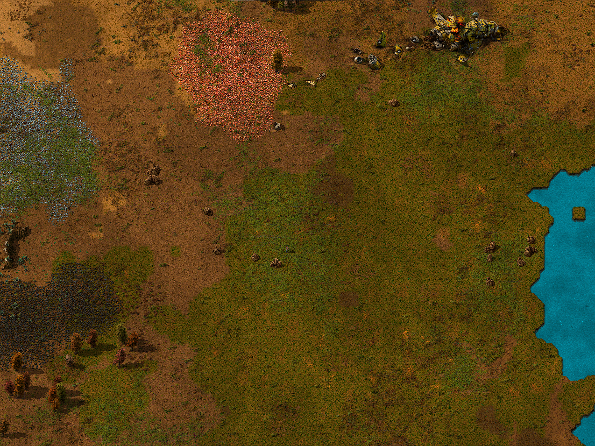
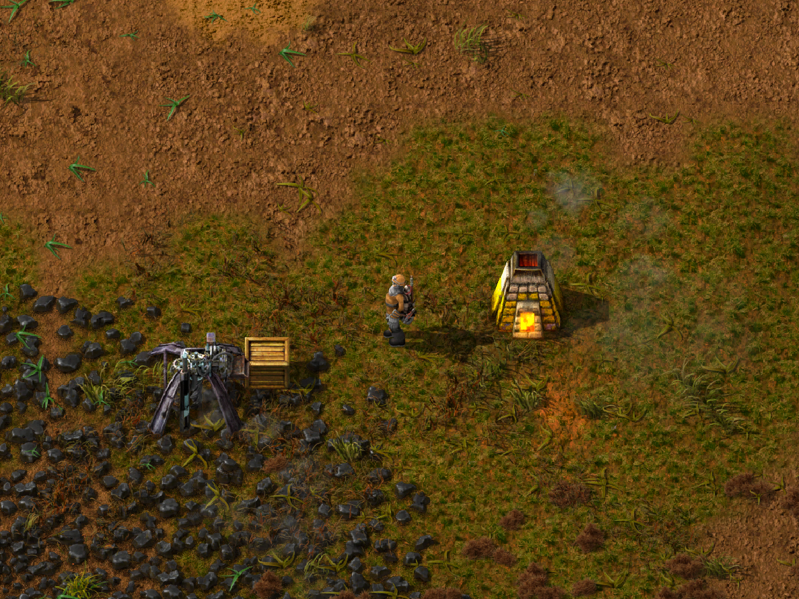
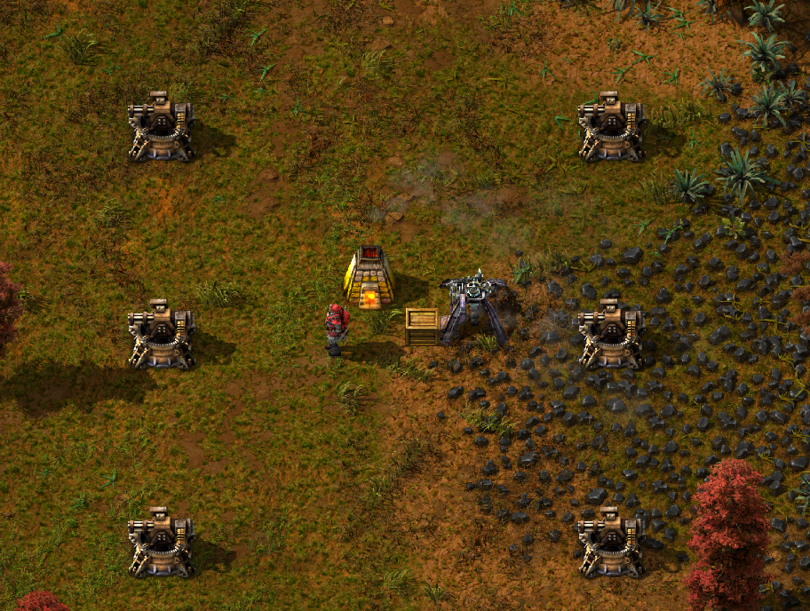
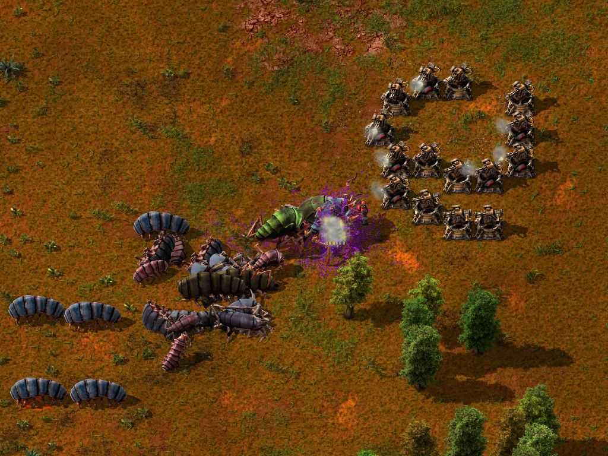

Начало
После приземления в первую очередь вам нужно найти выгодное место на карте, желательно с тремя залежами: медь, железо и уголь. Ещё в игре существует камень, но на начальном этапе его расположение не особо важно. Обязательно поблизости должен быть источник воды, откуда мы будем вырабатывать первое электричество. Также рекомендуем искать место подальше от спавна кусак, иначе придётся сражаться с ними на ранних этапах развития, что заметно скажется на вашем игровом опыте и нервах :)

Пример идеальной местности для расположения
Часть 1 (Производство)
Для того, чтобы начать своё маленькое автоматизированное производство игра вам даёт каменную печь, твердотопливный бур. На первом этапе всё просто, ставите бур и направляете его в печь. Далее нам нужно топливо для переплавки, можно вручную добыть дерево или уголь, а можно поступить умнее и поставить бур на уголь и собирать его пока что в ящик.

Часть 2 (Оборона)
Для начальной обороны первым делом сделайте несколько турелей и расставьте по периметру залежей ресурсов. Тем самым вы сможете спокойно заниматься изучением крафтов и не отвлекаться лишний раз на противника.

Часть 3 (Атака)
Главная часть 1 эпохи – это возможность устраивать сафари! Берём 5-10 турелей, 100-150 магазинов с патронами и идем к гнезду кусак. По пути к очагам начинаем ставить за собой турели, задние ломаем и переставляем ещё ближе к очагу. Механизм простой: переставляем турель за турелью из отдалённого участка всё ближе к гнезду и уничтожаем его. Таким образом спокойно зачищаем первые несколько ульев рядом с базой. Лучшая защита – это нападение.
